Oracle AI Database · Supply-chain AI · MCP · Agent-to-UI protocols
Develop A2UI and MCP Apps with Oracle AI Database and the Java MCP Toolkit running in Google Gemini Enterprise App, ChatGPT, and Claude
By Paul Parkinson · Updated August 20, 2026
Build dynamic agent experiences with trusted native A2UI components or portable, sandboxed MCP Apps while keeping rendering, interaction, and execution boundaries explicit.
How can an AI agent build a useful interface during a task while keeping data access and execution governed? This runnable supply-chain reference separates each responsibility:
A planner reviews a database-calculated recommendation in a task-specific interface, while Oracle AI Database retains final authority over validation, locking, the transaction, and its audit record.
- Oracle AI Database calculates feasible source-to-target recommendations and remains the authoritative data, transaction, and audit layer.
- Oracle Database MCP Java Toolkit exposes reusable, allowlisted business tools instead of unrestricted SQL or database write access.
- A2UI lets an agent dynamically build and update an interface by sending a structured JSON recipe that the client securely renders with pre-approved native components.
- MCP Apps package a developer-built HTML and JavaScript application as a sandboxed
ui://resource for a compatible conversational application. - AG-UI, when a custom frontend needs it, streams agent events, state, text, and tool lifecycles between the service and that frontend.
- A2A connects a conversational application such as Gemini Enterprise to the independently deployed A2UI-producing agent.
The MCP Toolkit approach is perfectly suited to this architecture because the same governed tool contracts can be reused by multiple agents, custom frontends, and MCP-compatible clients.
All Java, JavaScript, TypeScript, SQL, YAML, security notes, and setup instructions are in the project folder on GitHub.
Video walkthrough: Watch the complete A2UI, MCP Apps, Oracle Database MCP Java Toolkit, and Oracle AI Database demonstration on YouTube.
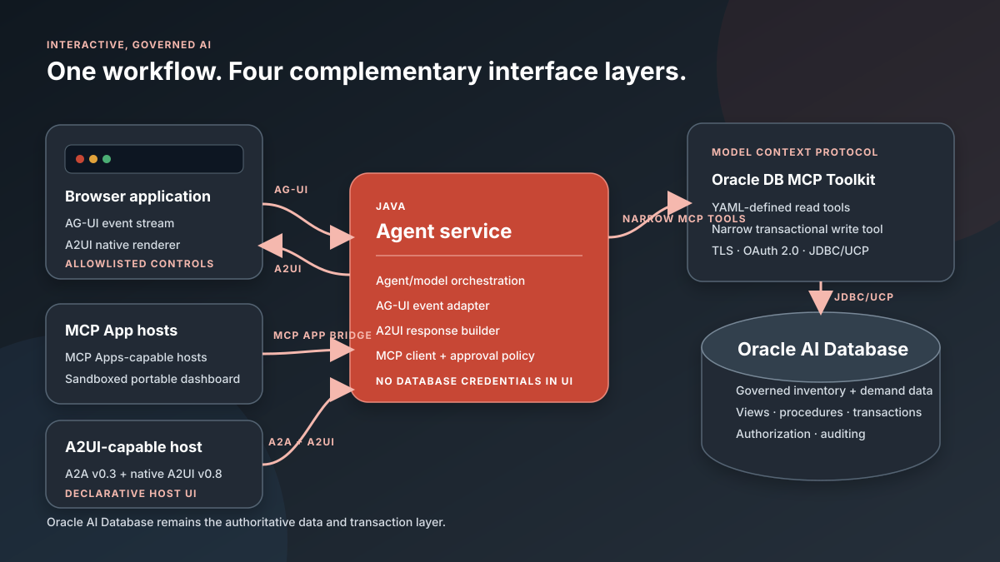
A2UI version compatibility: the standalone browser adapter emits A2UI v0.9.1 in AG-UI events, while the checked-in Gemini Enterprise adapter emits A2UI v0.8 DataParts over A2A. These are separate host adapters over the same service, not mixed versions on one UI surface. Each host validates the version and catalog it advertises. Gemini Enterprise currently documents both A2UI v0.8 and v0.9 support.
Key Takeaways
- A planner can review a database-calculated recommendation while Oracle AI Database retains final transaction and audit authority.
- Oracle AI Database provides governed data services that the Oracle Database MCP Java Toolkit exposes as reusable, bounded operations, helping AI agents query business data safely through MCP.
- A2UI is a runtime protocol, not a code generator: an agent describes intent as validated JSON and the host renders approved native components from its own design system.
- Rich agent tasks need interfaces beyond chat. A2UI provides safe, consistent composition; MCP Apps provide
portable custom web experiences through sandboxed
ui://resources. - Both UI paths can collect explicit human approval while the application and database retain execution authority.
Why Agent-Generated UI Needs a Runtime Contract
Agents increasingly need forms, comparisons, visualizations, and approval controls, but production applications should not execute arbitrary model-generated frontend code. Fixed widgets are safer yet too rigid for task-specific interfaces.
A2UI closes that gap with declarative JSON for components, layout, data bindings, and actions. A host is the user-facing application. In this article, the standalone browser and Gemini Enterprise demonstrate host-rendered A2UI, while Gemini Enterprise, ChatGPT, and Claude demonstrate MCP Apps. An A2UI host's component catalog is the allowlist of native controls it knows how to validate and render. The host preserves its design system and accessibility while rejecting unsupported capabilities.
The result is a UI that can appear and update during a conversation without executing agent-generated frontend code. The host controls rendering, and Oracle AI Database retains authority over the transaction.
Which Protocols Connect Which Responsibility?
The host examples in this article are the standalone browser, Gemini Enterprise, ChatGPT, and Claude. Each supports a different combination of transport and UI capabilities.
AG-UI is not required merely because an application uses A2UI or MCP Apps. AG-UI is an optional event transport for a custom frontend; A2UI is a declarative JSON UI specification; and MCP Apps package a developer-built web application. A design can use any one of them or combine them when their separate responsibilities are needed.
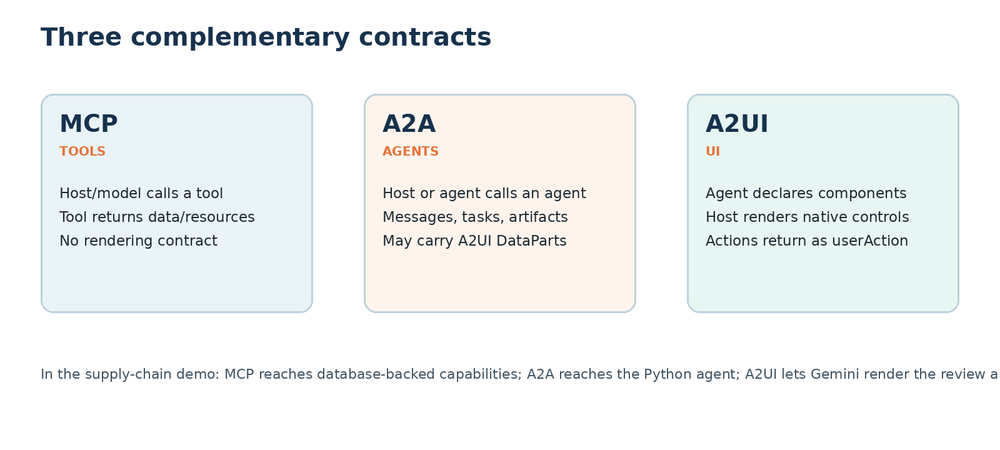
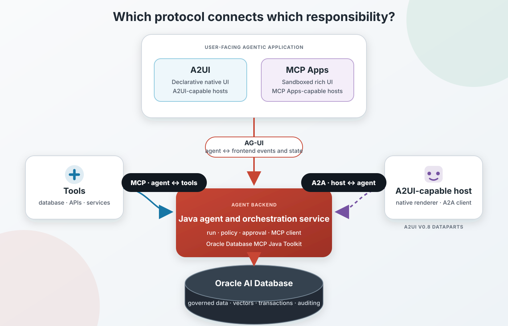
| Layer | Primary job | In this application |
|---|---|---|
| AG-UI | Optional transport pipeline for tokens, events, tool lifecycles, and shared state between an agent backend and a custom frontend. | Carries run lifecycle, text, MCP tool activity, A2UI messages, state, and errors over SSE. |
| A2UI | Declarative, streaming JSON recipe that lets an agent dynamically build and update a UI from the host's pre-approved native component catalog. | Defines inventory cards, notes, approval, and cancel controls. |
| MCP Apps | Developer-built HTML and JavaScript application returned as a ui:// resource for a host
sandbox. |
Provides the portable recommendation dashboard for compatible conversational hosts. |
| MCP | Standardizes discovery and invocation of tools and resources. | Connects the service to five governed Oracle Database operations. |
| A2A | Standardizes agent discovery, requests, and results. | Carries host requests and A2UI v0.8 DataParts. |
| Oracle Database MCP Java Toolkit | Expose reusable Oracle Database capabilities. | Runs the exact YAML-defined allowlist of reads and procedure-backed writes. |
| Oracle AI Database | Remain the trusted data and execution layer. | Computes recommendations and enforces locking, transactions, authorization, and auditing. |
GitHub Repos Map
| Directory | What it contains |
|---|---|
agent-service/ |
Java orchestration, Streamable HTTP MCP client, approval state, AG-UI events, REST endpoints, and A2UI payloads. |
oracle-db-mcp-toolkit/ |
Standalone Toolkit startup, TLS setup, YAML tool definitions, contracts, and pinned-runtime support. |
database/ |
Sample schema, inventory data, recommendation view, transfer audit, and approval procedure. |
web-client/ |
Standalone browser that consumes AG-UI events and renders allowlisted A2UI components. |
gemini-enterprise-a2a/ |
A2A endpoint, generated agent card, Java-service adapter, and A2UI v0.8 response builder. |
mcp-app/ |
TypeScript MCP server, ui:// resource, sandboxed dashboard, and host-bridge actions. |
deploy/gcp/ |
macOS/Linux deployment scripts and Cloud Build configuration for hosted adapters and MCP Apps. |
scripts/,
docs/, and
images/ |
Smoke tests, setup guidance, sequence diagrams, and sanitized product captures. |
From Stockout Analysis to an Inventory-Transfer Decision
Consider the request: “Show inventory at risk of stockout, explain the demand and safety-stock factors, and let me approve a feasible transfer from another location.” A useful supply-chain AI application must expose more than a prose answer:
- the current run status and governed database tool being invoked;
- a bounded list of products and target locations at risk;
- on-hand, reserved, inbound, forecast, safety-stock, and shortage quantities;
- a feasible source location, transfer quantity, transit time, and cost;
- an explicit approval boundary with an operator note; and
- a transfer ID and auditable completion state.
The agent can decide when to request recommendations and how to explain them. It cannot choose an arbitrary transfer quantity, execute generated SQL, create new UI capabilities, or substitute a different source and target after approval. These enforced boundaries provide application and database guardrails that reduce manipulation, unauthorized operations, and unintended writes.
How the Shared Architecture Connects
A2UI does not mandate a transport. The standalone browser example receives A2UI v0.9.1 inside AG-UI
CUSTOM events, while the Gemini Enterprise Apps example receives A2UI v0.8 DataParts over A2A. The
MCP Apps use MCP Streamable HTTP and a host bridge instead of either transport used to carry A2UI.
A host adapter translates the shared domain result into the contract supported by a particular
host. gemini-enterprise-a2a/main.py
adapts the result to A2A/A2UI for Gemini Enterprise; mcp-app/server.ts
exposes the MCP App used by ChatGPT, Claude, and Gemini Enterprise; and web-client/app.js
consumes AG-UI/A2UI in the standalone browser. These adapters do not duplicate the
Oracle query or approval policy.
Do MCP Apps use A2UI? Not automatically. This reference application implements two alternative UI paths over the same governed service: a host-rendered A2UI path and a sandboxed MCP App path. The official A2UI project also defines optional composition patterns for embedding an MCP App as a custom component in an A2UI surface and for bundling an A2UI renderer inside an MCP App. Those patterns require explicit renderer, catalog, bridge, and sandbox integration; using either protocol alone does not activate the other.
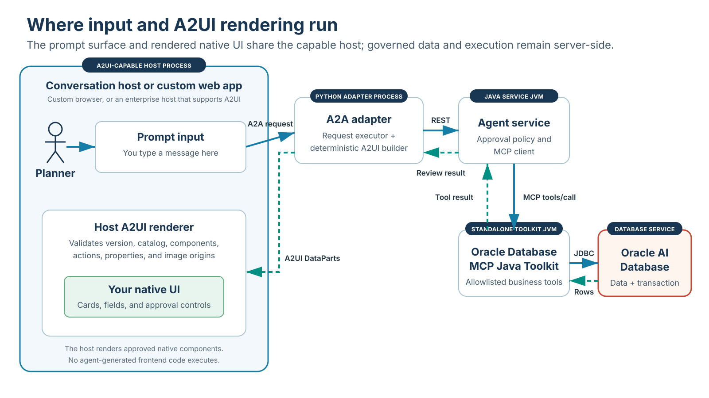
Keep the boundaries clear: the Oracle Database MCP Java Toolkit is database-facing. Orchestration and approval policy belong in the agent service; A2UI rendering belongs in the host or web client; rich MCP App content belongs behind the host bridge.
Expose Bounded Supply-Chain Tools with the Oracle Database MCP Java Toolkit
The Toolkit configuration enables exactly five business operations:
find-stockout-transfer-recommendationsreturns bounded recommendations above a risk threshold.get-stockout-transfer-detailsretrieves one current recommendation by its compound ID.reserve-inventory-transfer-idobtains the next audit identifier.approve-inventory-transfercalls the locked, procedure-backed write.count-inventory-transfersverifies the resulting audit record.
Terminology: “bounded” or “narrow” is descriptive shorthand here, not a formal MCP or Oracle Toolkit tool category. It means a purpose-built, allowlisted operation with constrained inputs and outputs, bind variables, explicit validation, and least-privileged database access. Those properties make behavior safer, more deterministic, and more auditable than unrestricted SQL; they do not make a tool absolutely safe.
The following toolset and bind-variable query are defined in
oracle-db-mcp-toolkit/config/tools.yaml:
toolsets:
supply-chain-exchange:
- find-stockout-transfer-recommendations
- get-stockout-transfer-details
- reserve-inventory-transfer-id
- approve-inventory-transfer
- count-inventory-transfers
tools:
find-stockout-transfer-recommendations:
dataSource: financial-db
parameters:
- name: minimumStockoutRisk
type: number
required: true
- name: maximumRows
type: integer
required: true
statement: >-
SELECT * FROM (
SELECT *
FROM stockout_transfer_recommendation_v
WHERE stockout_risk_score >= :minimumStockoutRisk
ORDER BY stockout_risk_score DESC
) WHERE ROWNUM <= :maximumRowsMcpToolkitSupplyChainRepository connects to the independently running Toolkit through authenticated
Streamable HTTP, completes MCP initialization, verifies the server identity, and requires the exact
supply-chain-exchange allowlist. Built-in read-query, write-query, table,
and administration tools are never enabled.
The following excerpt from
agent-service/src/main/java/com/oracle/demo/interactiveai/McpToolkitSupplyChainRepository.java
validates input and invokes the named MCP tool rather than accepting generated SQL:
InputValidation.minimumStockoutRisk(minimumStockoutRisk);
InputValidation.maximumRows(maximumRows);
return rows(client.callTool(
"find-stockout-transfer-recommendations",
Map.of(
"minimumStockoutRisk", minimumStockoutRisk,
"maximumRows", maximumRows)))
.stream()
.map(row -> new TransferRecommendation(/* typed columns */))
.toList();The same file fails closed if discovery returns anything other than the expected tool names:
Set<String> available = client.listTools();
if (!available.equals(requiredTools)) {
throw new IllegalStateException(
"Oracle Database MCP Toolkit tool allowlist mismatch");
}Choose A2UI Consistency or MCP App Flexibility
| UI contract | How it works | Security method | Advantage | Tradeoff |
|---|---|---|---|---|
| A2UI | The host renders the agent's validated declarative recipe with trusted native components. | The host validates the payload and permits only components, properties, and actions in its approved catalog. | Native appearance, accessibility, predictable behavior, and a host-controlled catalog. | The agent can compose supported controls but cannot invent a new component or arbitrary JavaScript. |
| MCP Apps | An agent or MCP server returns an interactive HTML/JavaScript resource through a ui://
pointer; the host renders it in a sandboxed iframe or mobile WebView. |
The host isolates the app with a sandbox, CSP, permissions policy, and validated bridge; the MCP server still authenticates and authorizes every tool call. | Custom charts, maps, canvases, and complete mini-applications can travel with the MCP server without being prebuilt into every host frontend. | The sandbox adds overhead, Content Security Policy constraints, and a visual boundary that may not perfectly match the host's native interface. |
The practical choice is host-native catalog consistency or developer-supplied presentation flexibility. Both can be secured, using the different controls summarized above, and both retain the same governed recommendation and approval workflow.
The Oracle logo illustrates the distinct controls. The MCP App permits the external image through
resourceDomains in mcp-app/server.ts.
The A2UI path separately requires the Image component and permits
https://www.oracle.com through allowedImageOrigins in web-client/app.js.
An A2UI payload does not inherit an MCP App's CSP.
Render Recommendation and Approval Controls with A2UI
agent-service/src/main/java/com/oracle/demo/interactiveai/A2uiPayloads.java
creates one A2UI v0.9.1
surface, supplies an adjacency-list component tree, and sends recommendation data separately:
{
"version": "v0.9.1",
"createSurface": {
"surfaceId": "inventory-transfer-review",
"catalogId": "https://a2ui.org/specification/v0_9_1/catalogs/basic/catalog.json",
"sendDataModel": true
}
}Gemini Enterprise also publishes a gemini_enterprise_composite_catalog.json
example that combines standard Material components with Gemini Enterprise components. This application uses
the standard catalog IDs advertised in its agent card.
The same class requests an Image from the host's approved Basic Catalog and declares the bounded
action names:
Map.of(
"id", "oracleLogo",
"component", "Image",
"url", "https://www.oracle.com/a/ocom/img/oracle-logo.svg",
"description", "Oracle logo for Oracle AI Database",
"fit", "contain",
"variant", "header");
Map.of(
"id", "confirm",
"component", "Button",
"text", "Approve inventory transfer",
"action", Map.of("event", Map.of(
"name", "approve_inventory_transfer")))web-client/app.js
accepts only the expected version, catalog, surface, component types, and HTTPS image origins. Generated values
enter the DOM through textContent; no A2UI payload can provide executable JavaScript:
const allowedComponents = new Set([
"Column", "Row", "List", "Card", "Text", "Image", "Button", "TextField"
]);
const allowedImageOrigins = new Set(["https://www.oracle.com"]);
if (!allowedComponents.has(component.component)) {
throw new Error(`A2UI component not allowed: ${component.component}`);
}
const url = new URL(component.url);
if (url.protocol !== "https:" || !allowedImageOrigins.has(url.origin)) {
throw new Error(`A2UI image origin not allowed: ${url.origin}`);
}
name.textContent = `${recommendation.sku} · ${recommendation.productName}`;The application does not present generic, application-authored follow-up choices. Each selectable card is a
concrete recommendation produced by STOCKOUT_TRANSFER_RECOMMENDATION_V, and the only write action
is to approve that exact transfer with an operator note or cancel it.
The A2A Agent Explicitly Advertises A2UI Support
The adapter publishes a dynamically generated agent card at
GET /.well-known/agent-card.json. Its A2A protocol version and A2UI extension are separate
declarations, so a host can discover both the communication contract and the supported UI capability before
invoking the agent.
build_agent_card() in gemini-enterprise-a2a/main.py generates a card equivalent to
this JSON representation:
{
"capabilities": {
"streaming": true,
"extensions": [
{
"uri": "https://a2ui.org/a2a-extension/a2ui/v0.8",
"required": false,
"params": {
"supportedCatalogIds": [
"https://a2ui.org/specification/v0_8/standard_catalog_definition.json"
]
}
}
]
},
"protocolVersion": "0.3.0"
}protocolVersion identifies A2A v0.3. The extension URI advertises A2UI v0.8, and
supportedCatalogIds identifies the standard component catalog the agent can produce. Because
required is false, the extension is optional for the interaction. Inspect a local card
with curl -s http://127.0.0.1:3002/.well-known/agent-card.json.
Who Decides Whether to Return A2UI?
Advertising A2UI support does not require every response to contain a UI. An agent can choose text, A2UI, or both according to the request, workflow state, host capabilities, and product policy. The host must still validate every A2UI message against the advertised version and catalog.
This application makes that choice deterministically rather than asking an LLM. In
SupplyChainExecutor.execute() in gemini-enterprise-a2a/main.py,
a normal request builds the review while a returned userAction follows the action path:
action = _extract_user_action(context)
if action:
parts = await _handle_action(action, access_profile)
else:
# Retrieve recommendations and return the A2UI review.A normal request returns text plus an A2UI review surface. An approve or cancel userAction returns
text plus a smaller A2UI result surface. A host that does not render the optional extension can still use the
text part, and an error path returns text only.
Map Oracle Database Results into Gemini Enterprise A2UI
gemini-enterprise-a2a/main.pycalls the Java service and receives the database-backed recommendation dictionaries:review = await asyncio.to_thread( _post_agent, "/api/reviews", { "minimumStockoutRisk": minimum_risk, "maximumRows": maximum_rows, "accessProfile": access_profile, }, )gemini-enterprise-a2a/a2ui_payloads.pymaps those values into approved A2UI components:components.extend([ _component( card_id, "Card", {"child": content_id}, ), # Additional approved components are omitted. _text( f"route-{index}", f"{recommendation['sourceLocationCode']} to " f"{recommendation['targetLocationCode']}: " f"{recommendation['recommendedTransferQuantity']} units", ), ])gemini-enterprise-a2a/main.pypackages the messages as A2UI DataParts in the A2A response:parts = [ Part(root=TextPart( text=f"Showing {len(review['recommendations'])} recommendations." )), *(create_a2ui_part(message) for message in messages), ]
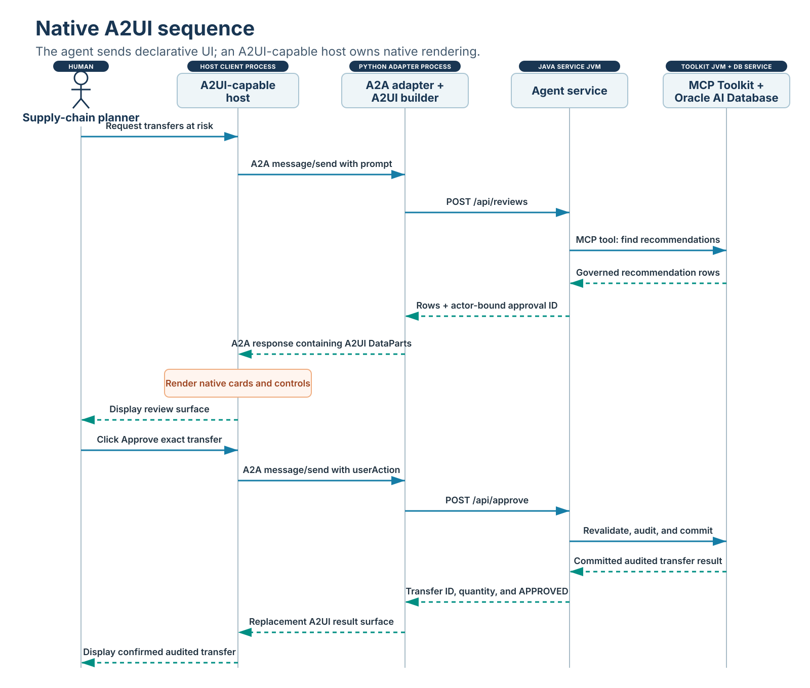
userAction.Optionally Stream A2UI and Agent State with AG-UI
The standalone frontend uses AG-UI because it needs incremental run state and tool activity as well as A2UI.
The following excerpt from
agent-service/src/main/java/com/oracle/demo/interactiveai/AguiRunService.java emits AG-UI events
over Server-Sent Events and carries each A2UI envelope in a CUSTOM event:
send(output, Map.of(
"type", "TOOL_CALL_START",
"toolCallId", toolCallId,
"toolCallName", "find-stockout-transfer-recommendations"));
send(output, Map.of(
"type", "STATE_SNAPSHOT",
"snapshot", Map.of("status", "AWAITING_APPROVAL")));
send(output, Map.of(
"type", "CUSTOM",
"name", "a2ui.message",
"value", envelope));The frontend can render progress before the full recommendation set arrives and correlate arguments and results
with one toolCallId. The standalone web-client/app.js validates allowlisted A2UI state
and renders this exchange's HTML rather than acting as a general-purpose A2UI renderer.
Add a Supply-Chain Dashboard with MCP Apps
The web application at http://127.0.0.1:8080 demonstrates AG-UI and A2UI. The separate
mcp-app/ package is a real MCP App demonstration that can run in the official MCP Apps basic host
without a third-party account.
The following abridged model-visible dashboard tool is defined in mcp-app/server.ts:
registerAppTool(server, "show-inventory-transfer-dashboard", {
title: "Show inventory transfer dashboard",
inputSchema: {
minimumStockoutRisk: z.number().min(0).max(100),
maximumRows: z.number().int().min(1).max(50)
},
_meta: {
ui: { resourceUri: "ui://oracle-supply-chain/inventory-exchange-v2" }
}
}, async ({ minimumStockoutRisk, maximumRows }) => {
const review =
await loadGovernedReview(minimumStockoutRisk, maximumRows);
return {
structuredContent: {
recommendations: review.recommendations,
source: "oracle-db-mcp-java-toolkit"
},
_meta: { approvalId: review.approvalId }
};
});
registerAppTool(server, "approve-inventory-transfer", {
inputSchema: {
approvalId: z.string().uuid(),
recommendationId: z.string(),
approvalNotes: z.string().min(10).max(500)
},
_meta: { ui: { visibility: ["app"] } }
}, approveExactReviewedTransfer);The same file registers the HTML as an MCP App resource and supplies the sandbox policy:
registerAppResource(
server,
resourceUri,
resourceUri,
{ mimeType: RESOURCE_MIME_TYPE },
async () => ({
contents: [{
uri: resourceUri,
mimeType: RESOURCE_MIME_TYPE,
text: await readFile(
path.join(import.meta.dirname, "dist", "mcp-app.html"),
"utf8"
),
_meta: {
ui: {
csp: {
connectDomains: [],
resourceDomains: ["https://www.oracle.com"]
}
}
}
}]
})
);The model-visible tool calls /api/reviews on the Java service. The service invokes the Toolkit's
allowlisted read tool and binds a short-lived approval handle to the exact returned rows. The handle travels in
widget-only result metadata rather than model-visible content. Selecting a card calls
updateModelContext; approving or canceling calls an app-only tool that the model cannot invoke. The
iframe receives neither wallet files nor database credentials.
The following abridged excerpt from mcp-app/src/mcp-app.ts shows the iframe requesting its app-only
approval tool through the host bridge:
const result = await app.callServerTool({
name: "approve-inventory-transfer",
arguments: {
approvalId,
recommendationId: selectedRecommendation.recommendationId,
approvalNotes: notes
}
});
const payload = result.structuredContent as { transferId?: number };
void app.updateModelContext({
content: [{
type: "text",
text: `The user approved transfer ${payload.transferId}.`
}]
});What Does “Sandboxed Iframe” Mean for an MCP App?
In a compatible host that implements the MCP Apps security model, developer-built HTML and JavaScript is loaded
as a ui:// resource in an isolated iframe rather than inserted into the host page. The intended
boundary prevents the app from reading or modifying the host DOM, cookies, or local storage; navigating the
parent page; or executing code in the host context.
Those guarantees depend on the host correctly implementing and enforcing separate origins, iframe sandbox
flags, Content Security Policy, Permissions Policy, and a validated JSON-RPC postMessage bridge.
MCP Apps metadata requests network, resource, and device permissions; it does not independently enforce the
browser boundary. Review the specific host's implementation and current documentation before relying on a
capability or restriction.
The sandbox provides browser isolation, not application authorization. The MCP server must still authenticate the actor, validate every tool input, enforce authorization, and protect downstream transactions.
The following metadata from mcp-app/server.ts
keeps network requests disabled, permits the Oracle logo as a static image from one official origin, and keeps
approval callable by the app rather than the model. connectDomains governs fetch, XHR, and
WebSocket destinations; resourceDomains governs images, scripts, styles, fonts, and media:
_meta: {
ui: {
csp: {
connectDomains: [],
resourceDomains: ["https://www.oracle.com"]
}
}
}
// Approval tool metadata
_meta: { ui: { visibility: ["app"] } }See the MCP Apps overview and the stable MCP Apps specification for normative sandbox and bridge behavior.
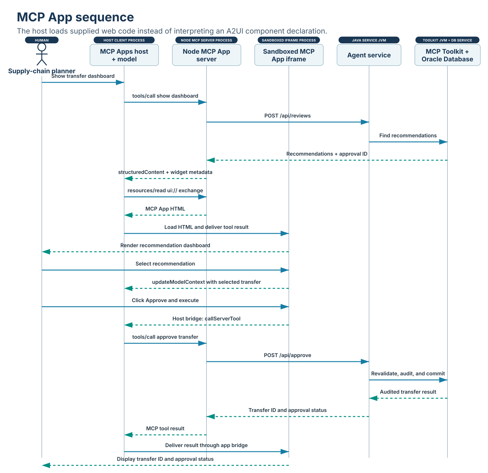
Bind Human Approval to One Exact Transfer
When the read completes, the agent service issues a short-lived approval ID bound to the actor and an immutable map of every returned recommendation. The browser posts only the approval ID, recommendation ID, and notes. It cannot replace the product, source, target, or quantity.
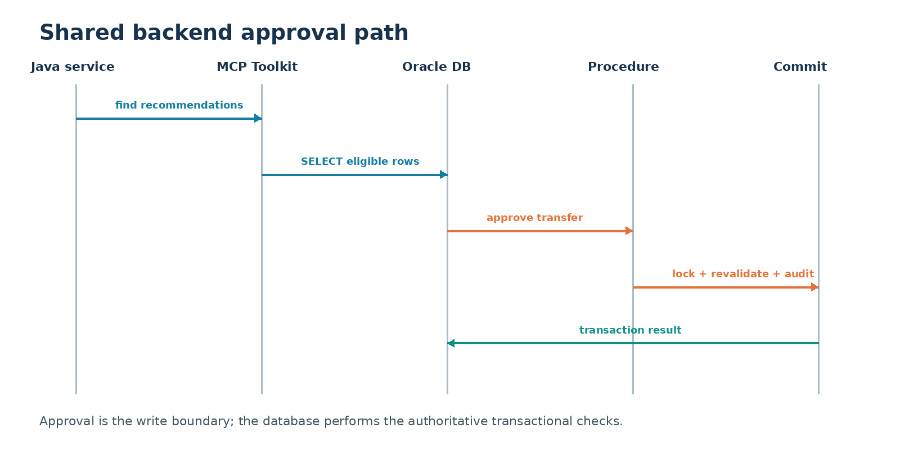
The write path reserves a transfer ID from a sequence and then calls an input-only procedure. The following
excerpt from database/setup.sql shows how Oracle locks the source and target positions, recomputes
surplus and shortage, and rejects a quantity greater than the current safe amount:
v_safe_transfer_qty := LEAST(v_source_surplus, v_target_shortage);
IF p_transfer_qty > v_safe_transfer_qty THEN
RAISE_APPLICATION_ERROR(
-20007,
'Recommendation is stale; current safe transfer quantity is ' ||
TO_CHAR(v_safe_transfer_qty));
END IF;
INSERT INTO inventory_transfers (...);
UPDATE inventory_positions
SET reserved_qty = reserved_qty + p_transfer_qty
WHERE product_id = p_product_id
AND location_id = p_source_location_id;The insert and inventory reservation are one tool statement and one transaction. Canceling consumes the pending approval without invoking the write. Reuse, an actor change, an unknown recommendation, invalid notes, or stale inventory causes rejection.
Auditable AI agent answers need more than explanatory prose: the UI preserves the Toolkit source label and database-calculated inputs, while an approved action returns a database transfer ID and durable audit state.
Run the Application Locally End to End
This local reference run shows how to test a database-backed AI application locally before deployment. It validates the shared database, standalone Toolkit, Java service, AG-UI stream, A2UI renderer, and MCP App before the following sections connect those same components to external conversational hosts. The browser places the database-calculated recommendation and approval controls beside the event stream so tool calling and state synchronization remain visible without an oversized full-page screenshot.
cd a2ui_mcpapps_mcptoolkit
cp .env.example .env
# Set DB_URL, TNS_ADMIN, DB_USERNAME, and DB_PASSWORD.
cd agent-service
./setup-database.sh
./test.sh
# Terminal 1: standalone Toolkit
cd ../oracle-db-mcp-toolkit
./run.sh full
# Terminal 2: Java service and browser
cd ../agent-service
./run.sh
# Open http://127.0.0.1:8080- Create Oracle AI Database 26ai. Use a cloud service or a local installation by following the Oracle AI Database 26ai quick start.
- Prepare the database. Run
agent-service/setup-database.shto create the sample inventory objects, recommendation view, transfer sequence, and approval procedure. - Start the Toolkit. In one terminal, run
oracle-db-mcp-toolkit/run.sh full. It exposes the allowlisted tools at an authenticated TLS MCP endpoint. - Start the application. In another terminal, run
agent-service/run.sh. Its HTTP MCP client connects to the Toolkit, verifies its identity and exact allowlist, and exposes the API and web client. - Open the inventory exchange. Browse to
http://127.0.0.1:8080. - Run the analysis. Set minimum stockout risk to
50, maximum rows to10, and submit. - Retrieve governed recommendations. The Toolkit binds the inputs and calls
find-stockout-transfer-recommendations. - Inspect the streamed result. AG-UI shows lifecycle and tool activity while A2UI renders the recommendation cards and approval controls.
- Approve or cancel. Select one returned recommendation, enter notes, and choose the explicit action.
- Commit through MCP. Oracle locks and revalidates both positions, writes the audit row, and reserves source inventory atomically.
- Run the smoke test. From another terminal, run
scripts/smoke-test.sh. - Open the MCP App locally. Run
mcp-app/run.shandmcp-app/run-basic-host.sh, openhttp://127.0.0.1:8082, and invokeshow-inventory-transfer-dashboard.
Full Setup and Runtime Walkthroughs for A2UI and MCP Apps in ChatGPT, Claude, and Gemini Enterprise
The following walkthroughs show the portable MCP App in ChatGPT, Claude, and Gemini Enterprise, followed by native A2UI over A2A in Gemini Enterprise. These products demonstrate the two UI approaches without defining or limiting which capable hosts can implement them.
Run the MCP App in ChatGPT
Author verification: The capability and setup claims in this section were checked against OpenAI's official ChatGPT UI, authentication, and connection and testing documentation on August 20, 2026. Product interfaces and terminology can change.
ChatGPT can discover the bounded MCP tool, call it with validated limits, load the ui:// resource,
and render the Oracle Database MCP Java Toolkit result inline.
OpenAI's current flow calls the host integration a plugin backed by an MCP connection. The server
exposes the component as a ui:// resource with media type text/html;profile=mcp-app,
while its public Streamable HTTP endpoint normally ends in /mcp. This repository already implements
that resource, tool metadata, host bridge, read-only dashboard tool, and app-only approval and rejection tools.
ChatGPT plugin / MCP connection
| public HTTPS Streamable HTTP: /mcp
v
TypeScript MCP App server
| ui:// resource + app-only action tools
v
Java approval service -> Oracle DB MCP Toolkit -> Oracle AI DatabaseSecure deployment and setup
Authentication boundary: keep the service private by default. Use synthetic data for any explicitly authorized anonymous read-only demonstration, and require OAuth 2.1 with issuer, audience, expiry, and scope validation before exposing customer-specific data or write actions.
- Set the required environment variables documented at the top of
deploy/gcp/deploy-chatgpt-mcp.sh, then run that script from macOS or Linux to build and deploy the private read-only service. It reads the wallet and password from Secret Manager. - With a Google identity token, verify
/health,tools/list,resources/read, and a read-onlytools/call. Confirm that anonymous access still returns 403. - Choose the access gate. Keep
MCP_WRITES_ENABLED=falsefor a synthetic-data rendering demonstration. For durable use or any approval action, configure an established OAuth 2.1 provider. - In ChatGPT, open Settings > Security and login and enable Developer mode. Workspace policy can control whether this setting is available.
- Open Plugins, select the plus button, name the plugin Supply-Chain Inventory Exchange,
choose the configured authentication method, and enter the deployment URL ending in
/mcp. - Acknowledge the custom-MCP warning, create and connect the plugin, then inspect its metadata. Discovery must
show only
show-inventory-transfer-dashboardwithminimumStockoutRiskandmaximumRowsinputs. - Start a new conversation, add Supply-Chain Inventory Exchange from the tools menu, and ask: “Show the inventory transfer dashboard for products with a minimum stockout risk of 70, limited to 3 recommendations.”
- Verify that ChatGPT calls the tool with
minimumStockoutRisk=70andmaximumRows=3, renders the embedded component, and labels the result as live data from the Toolkit. - Refresh the plugin connection whenever tool or resource metadata changes.
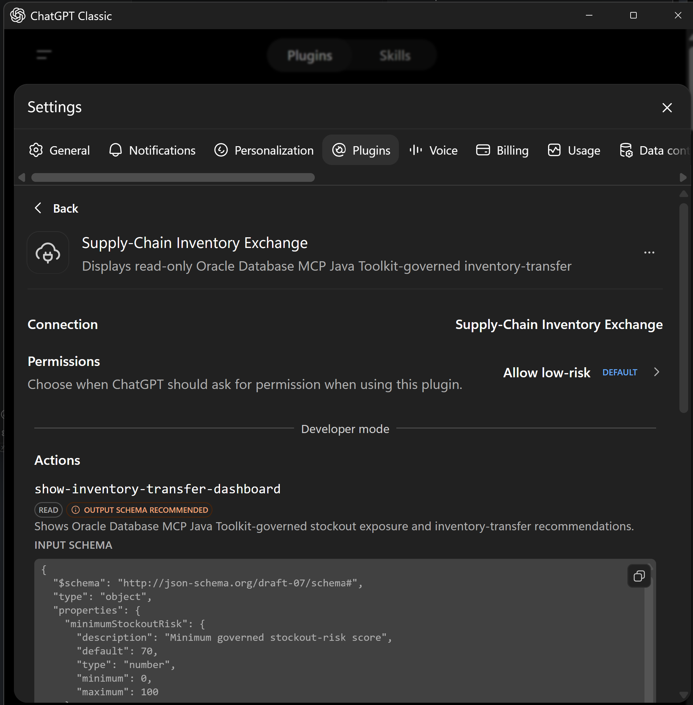
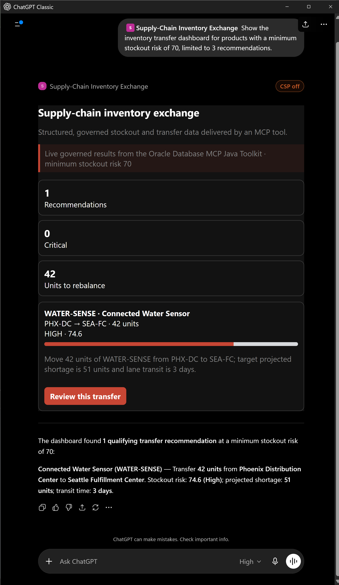
Run the MCP App in Claude
Author verification: The capability and setup claims in this section were checked against Anthropic's official remote MCP connector and interactive connector documentation on August 20, 2026. Product interfaces and terminology can change.
Claude can discover the custom connector, call its bounded interactive tool, receive the Oracle Database MCP
Java Toolkit result, and render the same ui:// MCP App. Because Claude connects from Anthropic's
cloud, it needs a securely exposed remote endpoint that meets the host's network and authentication
requirements.
Claude interactive connector
| public remote MCP endpoint: /mcp
v
Same TypeScript MCP App server
| ui:// resource + one bounded read-only tool
v
Java approval service -> Oracle DB MCP Toolkit -> Oracle AI DatabaseSetup and invocation steps
- Deploy the same Streamable HTTP MCP App service used by ChatGPT with an appropriate authentication boundary.
- In Claude, open Settings > Connectors, select Add > Add custom connector, provide a
descriptive name, and enter the remote URL ending in
/mcp. - Open the connector detail page. Confirm that it is connected and exposes exactly one interactive tool, Show inventory transfer dashboard. Choose whether Claude may invoke it automatically, ask each time, or never.
- Start a new chat, open the plus menu, enable Supply-Chain Inventory Exchange, and allow connector search if Claude presents that separate discovery opt-in.
- Ask:
Show the inventory transfer dashboard for products with a minimum stockout risk of 70, limited to 3 recommendations.
- Verify the model-visible tool result and inline widget both report the same Toolkit-backed row:
WATER-SENSE,PHX-DCtoSEA-FC, 42 units, and stockout risk 74.6. - Require OAuth 2.1 before exposing customer-specific data or registering the approval and rejection tools.
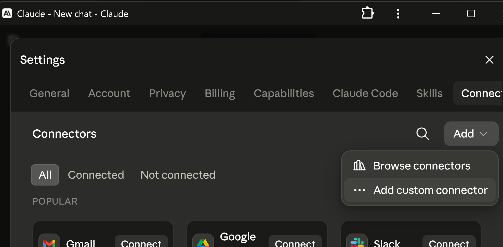
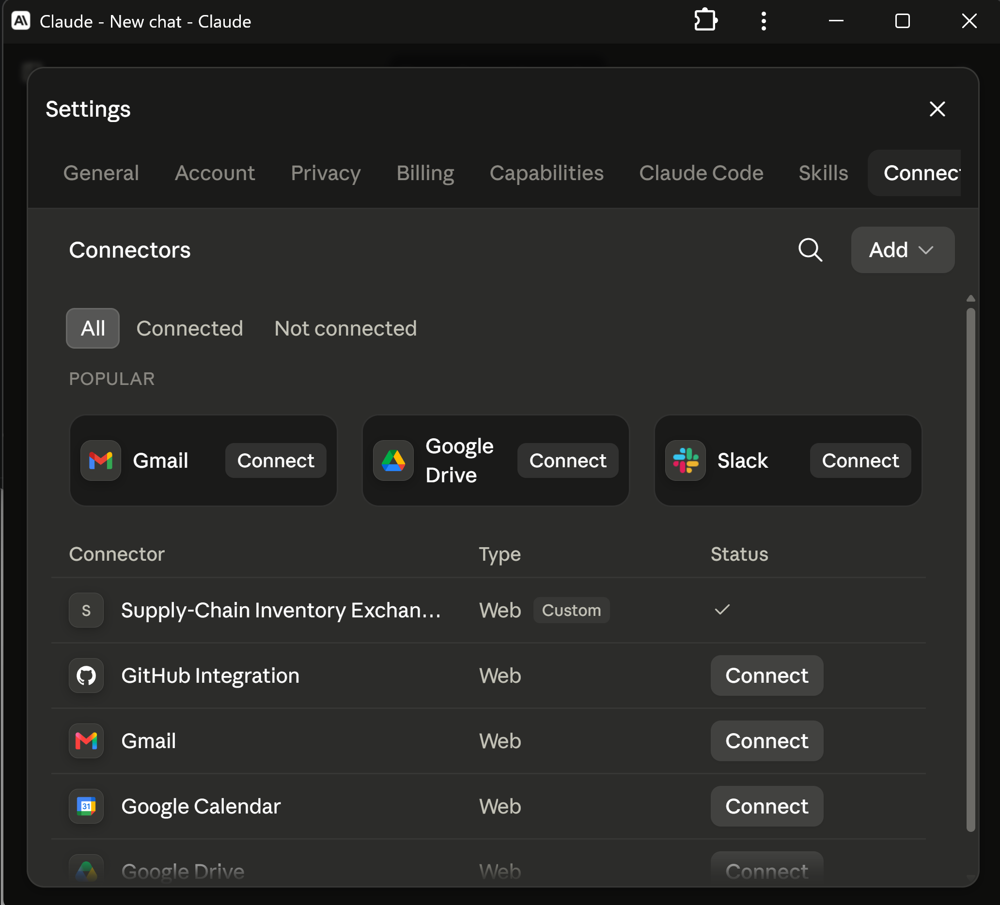
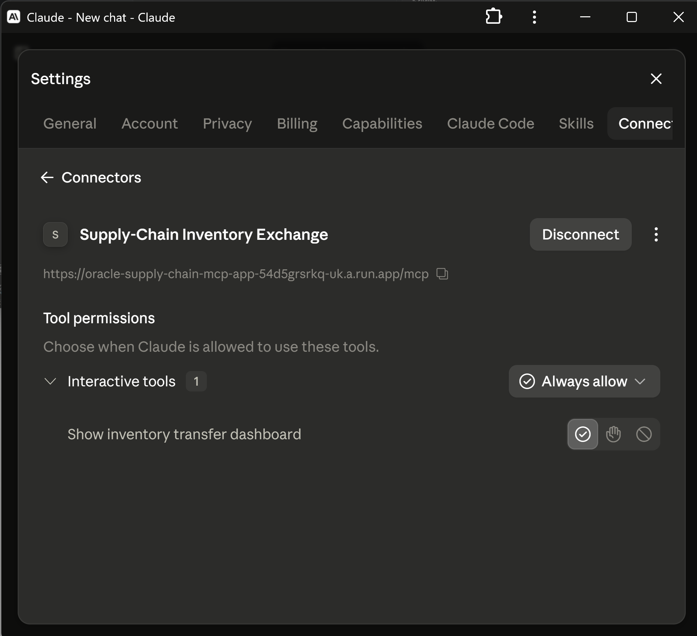
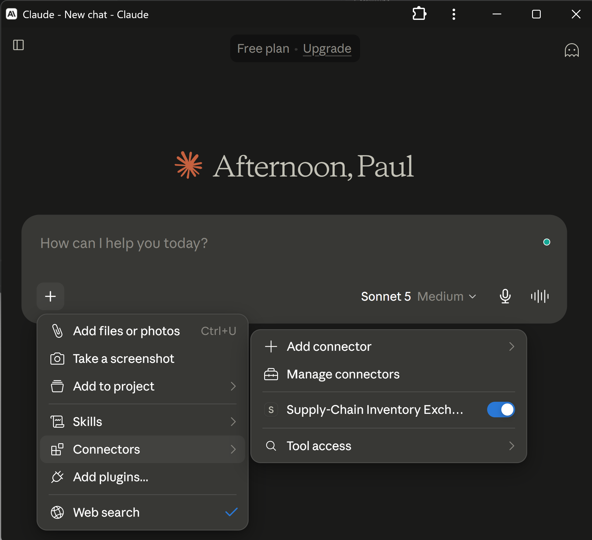
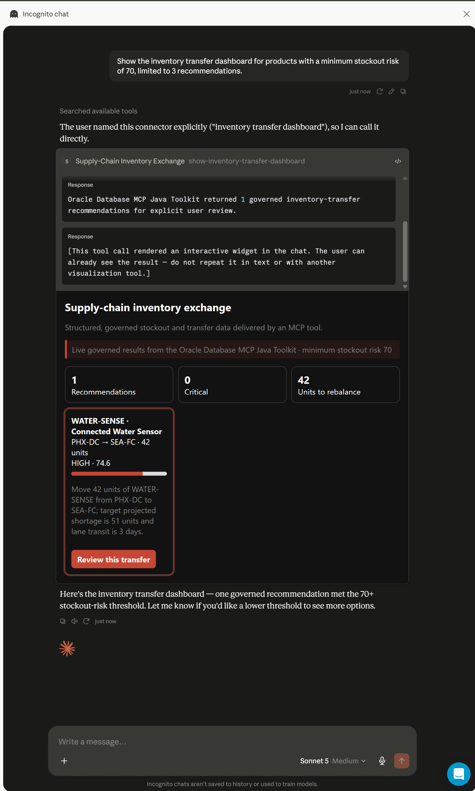
show-inventory-transfer-dashboard, displays the Toolkit result, and
renders the Oracle-backed MCP App inline.Run the MCP App in Gemini Enterprise
Author verification: The capability and setup claims in this section were checked against Google Cloud's official custom MCP server data store documentation on August 20, 2026. Product interfaces and terminology can change.
Gemini Enterprise can load the same ui:// dashboard through a Custom MCP Server data store. This
is separate from its native A2UI/A2A agent: the MCP path discovers a tool and loads sandboxed web content, while
the A2UI path receives declarative component messages and renders native controls.
Gemini Enterprise
| private Custom MCP Server connector
| Streamable HTTP + OAuth
v
TypeScript MCP App server
| ui:// inventory dashboard
v
Java service -> Oracle DB MCP Toolkit -> Oracle AI DatabasePrivate connector setup
- Set the required environment variables documented at the top of
deploy/gcp/deploy-gemini-enterprise-mcp.sh, then run that script from macOS or Linux. It keeps Cloud Run private, disables MCP writes, and grants invocation only to the Discovery Engine service agent. - Create a Google OAuth web client with the authorized redirect URI
https://vertexaisearch.cloud.google.com/oauth-redirect. Keep the client secret outside Git, screenshots, logs, and model context. - Create a Custom MCP Server data store. Enter the private service URL ending in
/mcp, authorization URLhttps://accounts.google.com/o/oauth2/auth, token URLhttps://oauth2.googleapis.com/token, and authorization parameter&access_type=offline. - Request
openid email profile https://www.googleapis.com/auth/cloud-platform, enable PKCE, enable HTTP Basic authentication, select Login, and complete the Google authorization flow. - Name the connector Oracle Supply-Chain MCP App, connect it to the target Gemini Enterprise application, and wait until its status is Active.
- Open Actions, select Reload custom actions, enable
show-inventory-transfer-dashboard, and verify that no broader SQL or write tool is model-visible. - In the Gemini Enterprise application, enable the connector and ask:
Show the inventory transfer dashboard for products with a minimum stockout risk of 70, limited to 3 recommendations.
- Confirm that the tool result and sandboxed widget agree on the governed recommendation and display the read-only boundary. The native A2UI agent is not involved in this path.
Run Native A2UI in Gemini Enterprise
Author verification: The capability and setup claims in this section were checked against Google Cloud's official A2UI registration and Cloud Run tutorial documentation on August 20, 2026. Product interfaces and terminology can change.
Gemini Enterprise is the A2UI-capable host used in this reference application. Its custom-agent path uses A2A as the conversation transport and A2UI as declarative UI cargo. This implementation targets A2A v0.3 and A2UI v0.8, while the standalone browser consumes A2UI v0.9.1 envelopes. This is one implementation example, not a coupling between A2UI and Gemini Enterprise.
Separate A2A Transport from A2UI Presentation
In this repository, gemini-enterprise-a2a/main.py co-locates the A2A endpoint, request executor,
Java API client, and deterministic A2UI v0.8 builder in one process. That is a compact implementation choice,
not a protocol requirement. A2A carries messages, tasks, artifacts, and DataParts between Gemini Enterprise and
the remote agent; A2UI is the declarative presentation placed in those DataParts.
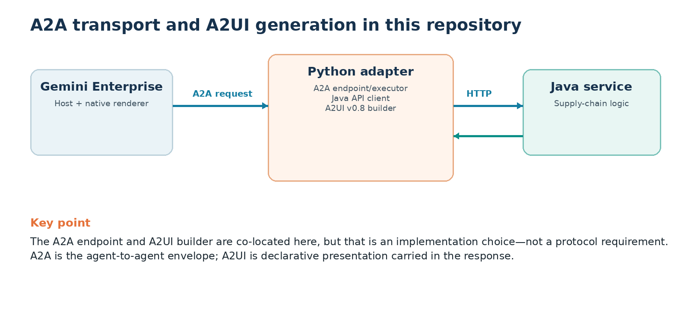
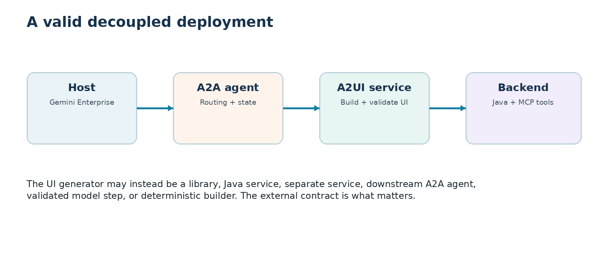
The agent card shown in the A2UI implementation section advertises the A2UI v0.8 extension and standard catalog that this co-located builder produces. A decoupled implementation would advertise the same external contract.
Follow the Native A2A/A2UI Path
Gemini Enterprise
| A2A v0.3 JSON-RPC
| A2UI v0.8 DataParts
v
gemini-enterprise-a2a
| POST /api/reviews, /api/approve, /api/reject
v
Java agent service
| Oracle Database MCP Java Toolkit
v
Oracle AI DatabaseThe adapter emits deterministic beginRendering, surfaceUpdate, and
dataModelUpdate messages containing native cards, approval notes, and one button per exact
recommendation. Gemini Enterprise resolves the button context into a v0.8 userAction; the adapter
forwards only the approval handle, recommendation ID, and notes. The Java service recovers the immutable
recommendation and Oracle revalidates it under locks. Every host-specific adapter shares this governed workflow
and transaction without sharing a UI protocol.
The following excerpt from gemini-enterprise-a2a/a2ui_payloads.py returns the ordered A2UI v0.8
messages that the host renders:
return [
{
"beginRendering": {
"surfaceId": surface_id,
"root": "root",
}
},
{
"surfaceUpdate": {
"surfaceId": surface_id,
"components": components,
}
},
{
"dataModelUpdate": {
"surfaceId": surface_id,
"contents": [{
"key": "approvalNotes",
"valueString": (
"Approve the database-recommended transfer "
"to reduce stockout exposure."
),
}],
}
},
]Deploy the Gemini adapter on Google Cloud
Gemini Enterprise requires a reachable HTTPS A2A endpoint; it does not require the agent to run on a Compute Engine VM. Cloud Run supplies managed HTTPS and can reach a private Oracle AI Database endpoint through Direct VPC egress when required.
Gemini Enterprise: Inventory System
| managed HTTPS
v
Cloud Run: A2A/A2UI adapter
| IAM-authenticated adapter :8080
| loopback Java service :8081
| authenticated Streamable HTTP
v
Oracle Database MCP Java Toolkit service
v
Oracle AI Database private serviceThe Cloud Run image contains the adapter, Java service, and pinned Toolkit but no secret. Secret Manager mounts the Oracle wallet and injects the dedicated database password at runtime. The entrypoint expands the wallet into ephemeral storage, starts Java only on loopback, waits for its health check, and then exposes the A2A adapter on Cloud Run's assigned port.
The checked-in deploy/gcp scripts build the image with Cloud Build, use a dedicated runtime service
account, limit Cloud Run to one instance while approval handles remain in memory, set the final service
URL in the agent card, and register that card through the official Discovery Engine
assistants/default_assistant/agents REST resource. The deployed endpoint rejects anonymous calls
and grants roles/run.invoker only to Gemini Enterprise's Discovery Engine service agent. Google's
Cloud Run guidance recommends this IAM model for internal clients such as Gemini Enterprise; an OAuth client is
needed only when the agent must access Google resources on behalf of the end user.
The private database endpoint is reached through Cloud Run Direct VPC egress. A VM in the VPC remains a valid alternative, but the protocol and A2UI implementation do not change. Reject anonymous discovery and grant invocation only to the intended Gemini Enterprise service identity.
Register, share, and invoke the custom agent
Register the deployed agent card with the Gemini Enterprise application in the same project and location, then
share the custom agent using the per-agent Agent User role. Assign the required Gemini Enterprise
license to each user; licensing is an account prerequisite, not part of the application architecture.
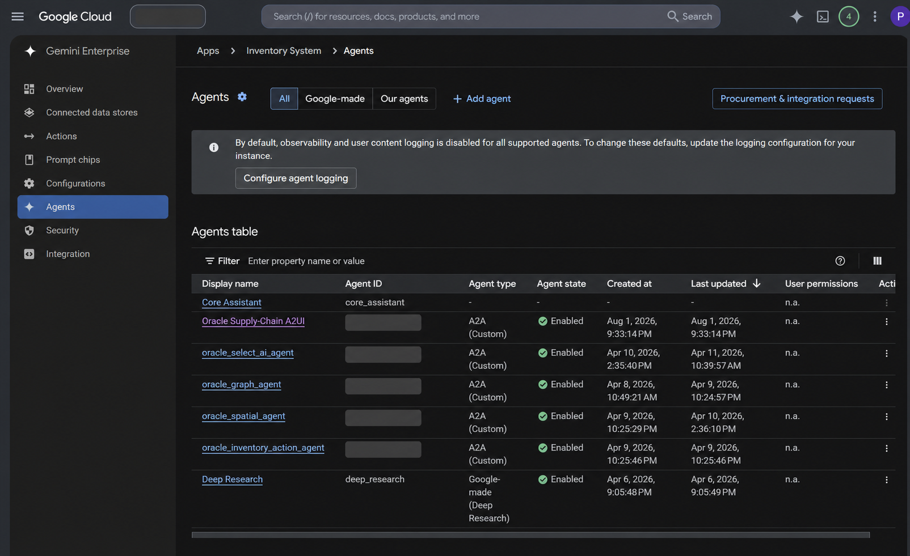
Oracle Supply-Chain A2UI is
registered and enabled as a custom A2A agent for the app.In the Gemini Enterprise web app, the shared agent appears under From your organization. The prompt
Show inventory transfers with a minimum stockout risk of 70, limited to 3 recommendations
invokes the
agent over authenticated A2A streaming. Oracle returned the one row in the sample data that met that threshold:
a 42-unit WATER-SENSE transfer from PHX-DC to SEA-FC with a stockout-risk
score of 74.6. Gemini Enterprise rendered the returned A2UI DataParts as a native card, approval-notes field,
exact-transfer approval button, and cancel-without-writing button. The host never loaded the MCP App iframe.
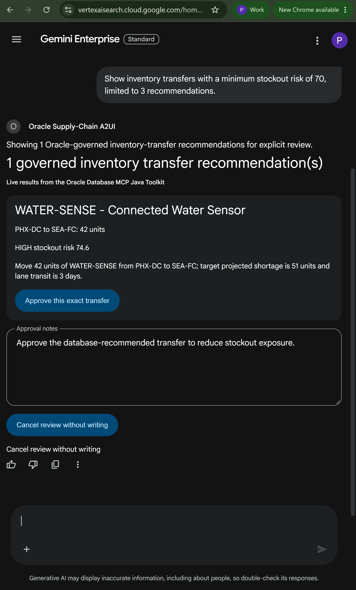
Security and Governance Checklist
- Use a least-privileged database principal with only the required view and procedure grants.
- Run the Toolkit as a separate Streamable HTTP service with TLS and bearer authentication or OAuth 2.0.
- Enable only purpose-built tools. Do not use
-Dtools=*or unrestrictedwrite-query. - Validate and bind every user value; enforce score, row-count, text-length, and timeout limits.
- Bind approval to actor, recommendation data, expiry, and a single use; add durable idempotency for production.
- Revalidate current inventory under locks at the final database boundary.
- Log tool, actor, timestamp, recommendation, approval, and status without logging secrets.
- Allowlist A2UI catalogs and components; treat MCP App content as untrusted and apply sandbox, CSP, and permission controls.
- Keep wallets, passwords, tokens, and client secrets out of the browser, model context, and repository.
Production Considerations
This reference application uses a transparent single-transfer heuristic. It does not replace supply-network optimization, order management, transportation planning, or warehouse execution. Approval state is stored in process, so production deployments need durable, shared approval and idempotency storage. Remote MCP write actions also require actor-bound OAuth authorization.
Negotiate A2UI versions and component catalogs explicitly, validate every payload at the host boundary, and test compatibility before upgrading an agent or host. Use TLS, least-privileged service identities, bounded location and value authority, and concurrent-transfer tests while preserving the database transaction as the final execution boundary.
References
Host product names identify documented examples tested for this article; they do not imply partnership, endorsement, or certification. Host-specific capability and setup claims link to the vendors' canonical documentation below.
- Source code for this supply-chain reference application
- Oracle Database MCP Java Toolkit README
- AG-UI protocol overview
- A2UI project and specification
- A2UI quickstart data flow
- A2UI: MCP Apps in A2UI surfaces
- A2UI: dynamic A2UI rendering within MCP Apps
- Southleft: A2UI, How AI Agents Build Real User Interfaces
- MCP Apps overview
- Build an MCP App
- Official MCP Apps SDK, examples, and basic host
- Google Cloud Run service-to-service authentication
- OpenAI: add UI to an MCP server
- OpenAI: authenticate plugin MCP servers
- Connect and test a ChatGPT plugin
- Anthropic: get started with custom connectors using remote MCP
- Anthropic: use interactive connectors in Claude
- Anthropic: use connectors to extend Claude's capabilities
- Anthropic: troubleshoot MCP Apps in Claude
- Anthropic: build cross-platform MCP Apps
- Gemini Enterprise: register an A2UI/A2A agent
- Gemini Enterprise: register an A2A agent
- Google Cloud: deploy A2A agents to Cloud Run with IAM
- Gemini Enterprise: host an A2UI agent on Cloud Run
- Google Cloud: guide to Gemini Enterprise and A2UI integration
- Google A2UI source and examples
- A2UI reference implementation linked by Google
- Google Cloud Run Direct VPC egress
- Gemini Enterprise: set up a custom MCP server data store
- Oracle Database@Google Cloud ODB network setup
- Oracle Database@Google Cloud network topologies
- Model Context Protocol specification
- Agent2Agent protocol documentation
- Oracle AI Database
Frequently Asked Questions
Does the MCP App replace the web client?
No. The custom web client demonstrates AG-UI and A2UI. The separate MCP App renders the same Toolkit-backed recommendations inside a compatible conversational host.
Are A2UI and MCP Apps tied to specific host products?
No. They are capability-based UI contracts. This project demonstrates Gemini Enterprise as an A2A/A2UI host and as an MCP Apps host, alongside ChatGPT and Claude MCP App examples. The governed service, Toolkit tools, recommendation IDs, and Oracle transaction boundary remain independent of the host.
Why not let the agent generate SQL or choose any transfer?
A bounded recommendation view and stored procedure make the allowed data, feasibility formula, privileges, locks, transaction, and audit result explicit. Unrestricted SQL or client-selected quantities would expand the attack surface and make execution less deterministic.
Where is approval enforced?
The agent service binds approval to the authenticated actor and exact returned recommendation. The MCP tool accepts only validated inputs, and Oracle AI Database locks and rechecks current stock before it commits the transfer.